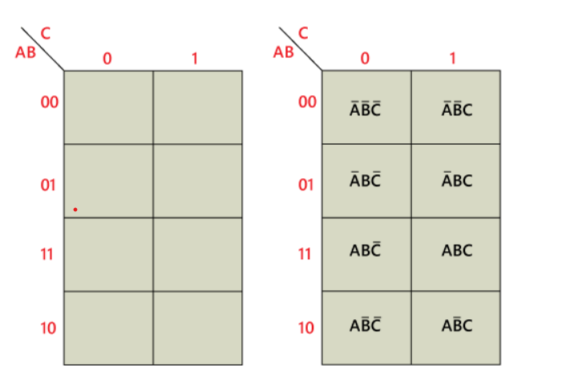

The K-map is a systematic way of simplifying Boolean expressions. With the help of the K-map method, we can find the simplest POS and SOP expression, which is known as the minimum expression. The K-map provides a cookbook for simplification.
Just like the truth table, a K-map contains all the possible values of input variables and their corresponding output values. However, in K-map, the values are stored in cells of the array. In each cell, a binary value of each input variable is stored.
The K-map method is used for expressions containing 2, 3, 4, and 5 variables. For a higher number of variables, there is another method used for simplification called the Quine-McClusky method. In K-map, the number of cells is similar to the total number of variable input combinations. For example, if the number of variables is three, the number of cells is 23=8, and if the number of variables is four, the number of cells is 24.
The K-map takes the SOP and POS forms. The K-map grid is filled using 0's and 1's. The K-map is solved by making groups. There are the following steps used to solve the expressions using K-map:
First, we find the K-map as per the number of variables.
Find the maxterm and minterm in the given expression.
Fill cells of K-map for SOP with 1 respective to the minterms.
Fill cells of the block for POS with 0 respective to the maxterm.
Next, we create rectangular groups that contain total terms in the power of two like 2, 4, 8, … and try to cover as many elements as we can in one group.
With the help of these groups, we find the product terms and sum them up for the SOP form.
for example: Variable 3 K-Map
The 3-variable K-map is represented as an array of eight cells. In this case, we used A, B, and C for the variable. We can use any letter for the names of the variables. The binary values of variables A and B are along the left side, and the values of C are across the top. The value of the given cell is the binary values of A and B at left side in the same row combined with the value of C at the top in the same column. For example, the cell in the upper left corner has a binary value of 000, and the cell in the lower right corner has a binary value of 101.
As we know that K-map takes both SOP and POS forms. So, there are two possible solutions for K-map, i.e., minterm and maxterm solution. Let's start and learn about how we can find the minterm and maxterm solution of K-map.
Minterm Solution of K Map
There are the following steps to find the minterm solution or K-map:
Step 1:
Firstly, we define the given expression in its canonical form.
Step 2:
Next, we create the K-map by entering 1 to each product-term into the K-map cell and fill the remaining cells with zeros.
Step 3:
Next, we form the groups by considering each one in the K-map
Notice that each group should have the largest number of 'ones'. A group cannot contain an empty cell or cell that contains 0.
Step 4:
In the next step, we find the boolean expression for each group. By looking at the common variables in cell-labeling, we define the groups in terms of input variables. In the below example, there is a total of two groups, i.e., group 1 and group 2, with two and one number of 'ones'.
In the first group, the ones are present in the row for which the value of A is 0. Thus, they contain the complement of variable A. Remaining two 'ones' are present in adjacent columns. In these columns, only B term in common is the product term corresponding to the group as A'B. Just like group 1, in group 2, the one's are present in a row for which the value of A is 1. So, the corresponding variables of this column are B'C'. The overall product term of this group is AB'C'.
Step 5:
Lastly, we find the boolean expression for the Output. To find the simplified boolean expression in the SOP form, we combine the product-terms of all individual groups.
The "Don't care" condition says that we can use the blank cells of a K-map to make a group of the variables. To make a group of cells, we can use the "don't care" cells as either 0 or 1, and if required, we can also ignore that cell. We mainly use the "don't care" cell to make a large group of cells.
The cross(×) symbol is used to represent the "don't care" cell in K-map. This cross symbol represents an invalid combination. The "don't care" in excess-3 code are 0000, 0001, 0010, 1101, 1110, and 1111 because they are invalid combinations. Apart from this, the 4-bit BCD to Excess-3 code, the "don't care" are 1010, 1011, 1100, 1101, 1110, and 1111.
We can change the standard SOP function into a POS expression by making the "don't care" terms the same as they are. The missing minterms of the POS form are written as maxterms of the POS form. In the same way, we can change the standard POS function into an SOP expression by making the "don't care" terms the same as they are. The missing maxterms of the SOP form are written as minterm of the SOP form.